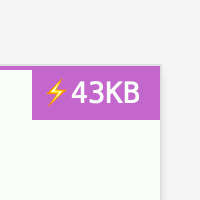

How to make small(er) web pages
It won’t save the world, but it’s kinda cool
September 2023
Sam Boyer
In terms of page performance, the Web is in a bit of a state. Websites are ~6x larger than they used to be in 2012, resulting in a pretty terrible experience for mobile users with slow connection speeds (e.g. while travelling through the countryside), or with weaker CPUs. Reducing the size of your website can alleviate both problems: your webpage will load faster on slower connections, and will consume fewer resources.
I started paying attention to my main webpage’s weight a few years ago - here’s how it’s changed since then:
(I don’t want this to be a repeat of Chrome’s Lighthouse recommendations - an excellent set of tips for optimising page load performance - so I’ll instead focus on more likely factors, or things that Lighthouse doesn’t cover.)
Shrinking my site = saving the world?
There’s an argument that reducing page sizes is important for reducing the climate impact of your website, and the Web in general. While partially true, page size and climate impact aren’t directly proportional for the following reasons:
- The dominant factor in the Web’s climate impact is the end-user
device’s energy consumption1, which in turn is mostly
dependent on how much time they spend using your site - not the kind of
thing you can code your way out of.
- There’s other relvant factors here: DOM and CSS complexity affects rendering times, and heavy Javascript usage will eat up the CPU - the size of their respective files is a good proxy for their complexity.
- Internet routers consume about
as much energy when idle than when at max throughput, so halving
your page size probably won’t affect how much energy they use.
- An industry-wide movement to reduce file sizes could result in less Internet capacity/equipment needed, considering how HD video streaming and giant software updates are the dominant factors in internet usage2, shaving off a few kilobytes from a webpage is unlikely to affect the Internet’s growth trends.
So climate impact aside, the main motivators are page load performance and code-golf-style fun. Maybe you can even get yourself into the 10KB Club.
Invisible changes
Choose better file formats.
Developed by Google in 2010 and officially released in 2018, the WebP format is generally considered the best file format for sending raster images over the Internet right now. It supports both lossy and lossless compression, alpha channels (transparency), and animated images, all with better compression ratios than the existing JPEG, PNG, and GIF formats.
| JPEG, quality=80: 21KB | WebP, quality=80: 9.0KB |
How to switch to WebP? Not all image editors come with WebP support built-in3, and any upstream photos are probably JPEG or PNG, so you may want to automate the conversion to WebP images. I used a short Node.js script in the past, but nowadays I’d probably use a wrapper around ImageMagick:
import subprocess, pathlib
path = Path('.')
for img in path.rglob('*.jpg'):
print(img)
subprocess.run(f'magick convert {img} -quality 50 {img.with_suffix.png}')Animated images: GIFs, belive it or not, were not designed to share animated pictures. This means that while each frame is somewhat compressed (using LZW - not great), there’s no comporession between frames, so a long animation can become very large.
Instead of GIF images, you should consider animated WebP images, or
(for better backwards-compatibility) MP4 videos in a
<video> tag. WordPress
users can also use self-hosted videos.
Consider SVG images
SVG files are used for ‘vector’ graphics, meaning instead of an array of pixel data, an SVG file contains instructions to draw the lines and shapes that comprise the image, which can then be rendered at any resolution. This makes them extremely efficient for sharing large images:
| JPEG, 1200x900, quality=80: 131KB | SVG, ∞x∞: 17KB |
| (124KB zipped ) | (7KB zipped) |
Deciding between raster (JPG, WebP) and vector (SVG) images will depend on the complexity and display size of your images. For example, solid line art that takes up the full width of your page is much better as an SVG, but a detailed photograph should probably stay as a WebP image.
Serve your images at the right resolution.
(This doesn’t apply to SVGs)
Since you usually know in advance the maximum size your image will be viewed at, you can reduce the resolution of your image to this size. A CMS like Wordpress might give you options for this in the page editor; otherwise you may need to do it locally. All good image editors have a resize option, including MS Paint and OSX’s Preview 🥳
If your page is responsive, you might want to change which image is
sourced depending on the screen resolution. This can be achieved via the
<img> srcset and sizes
attributes (more
info here), or in CSS via @media queries.
Don’t load CSS/JS that you don’t need.
Simple: If you don’t need a certain CSS/JS framework, don’t use it. This happened to me with jQuery - lots of StackOverflow answers use jQuery in their example code, leading us to import a whole package to perform one task we probably could have done with pure Javascript. If you can avoid dependencies on such libraries, you can save 100s of kilobytes and avoid lengthening your critical execution path.
Advanced: Only include the parts of a framework/library that you need.
CSS frameworks are an good option for styling a new webapp - you just add one line to import the framework - but they usually contain far more rules than you need to use. Tools such as PurgeCSS can identify unused rules and remove them.
I didn’t gain much from running PurgeCSS on my index page, since I
already keep my custom CSS file quite small, but on a WIP webapp that
imports Bootstrap I was able to reduce it from 233KB to 8.6KB
(-96%), without any loss of functionality 🎉 (Note that it
won’t check for any rules activated via Javascript, so remember to set
the safelist correcttly!)
There doesn’t seem to be an equivalent tool for removing unused Javascript - possibly because it’s impossible to obtain coverage via static analysis - but thankfully a few CDNs are beginning to serve their libraries in smaller pieces, such as AngularJS.
Another thing to consider is that you’ll need to host these customized files yourself, instead of linking directly to a CDN. This is probably a good thing for performance (skips a DNS lookup and TCP connection to the CDN), but you’ll need to remember to update your copy of the library/framework when needed.
Don’t load fonts/icon sets you aren’t using.
When you’re selecting fonts from a site like Google Fonts, it’s easy to select many weights of the same font in case you use them later; but (unless you’re using a fancy new Variable Fonts), every weight selected is its own font file at roughly equal cost as each other weight (e.g. ~170kb per weight for Roboto).
I don’t have an easy technique for detecting unused fonts sadly, but you could try checking which fonts are downloaded via DevTools -> Network -> Filter on ‘Fonts’, then check that each weight is used by some CSS rule, and finally that those CSS rules apply to some visible elements.
Trimming icon sets: Icon sets, like any other web fonts, can get quite large. Font Awesome v4 (an icon set I used to use on my site) weighs ~197KB (TTF+CSS file), but the handful of icons that I actually used only weighed 6KB. Tools such as the Icomoon app allow you to trim an icon set font down to the subset you need; Font Awesome also appears to offer something similar now.
Visible (but cool) changes
The following suggestions are for people like (like me) you have no designer to answer to.
Use fonts that are already available to you
After you’ve removed all the unused fonts/weight variants, you should
consider going the extra mile and removing web fonts altogether. Modern
OSes come packaged with beautiful fonts installed already, and a browser
can use any of them :) A particularly good font-family
option is system-ui: it resolves to San Francisco on
iOS/OSX, Roboto on Android, and Segoe UI on Windows - all lovely
sans-serif fonts with many
weight options to choose from. If you care about those 5.5% of browsers which
don’t support system-ui, however, you might want to
expand that macro into a long list of fallback fonts, like in GitHub’s
stylesheet:
font-family: -apple-system, BlinkMacSystemFont, "Segoe UI", "Noto Sans",
Helvetica, Arial, sans-serif, "Apple Color Emoji", "Segoe UI Emoji";(‘Web safe’ fonts are guaranteed to be installed on any system, but you don’t need to limit yourself to them - just make sure you add one as a fallback!)
🔥🔥🔥 Extreme image compression 🔥🔥🔥
If you’re willing to abandon flawless image quality and venture into some more retro image compression techniques, you can get extremely small image files.
Firstly: resolution. We already talked about reducing the resolution
to match, but there’s no need to stop there - you can reduce the
resolution as much as you like and scale it back upwards - just remember
to set image-rendering: pixelated in CSS to avoid blurry
edges.
| WebP, 400x300: 9.0KB | WebP, 80x60, quality=90: 6.2KB |
Another easy option: JPEG/Webp quality. If you’re really desperate to shave off a few extra KB, just turn the export quality way down. If anyone asks, tell them you’re aiming for that 00s Flash animation aesthetic.
| WebP, quality=80: 9.0KB | JPEG, quality=15: 16KB | WebP, quality=10: 6.7KB |
Probably the most powerful example is replacing 24-bit RGB colour with indexed colour profiles, where a small palette is declared at the start of the file and pixels refer to that table instead of the whole gamut. The palette is usually 8-bits (as in GIF images), but you can reduce this as much as you like; 2-bit monochrome at low resolutions can give you some really funky effects that resemble old GameBoy graphics:
| WebP, quality=80: 9.0KB | PNG, 2-bit monochrome: 3.3KB |
Once it’s in monochrome, you can use background and
mix-blend-mode rules to recolour it however you like, with
next-to-no cost:
I use a script to convert all the hi-res images on my website into dithered images like the above; the crucial ImageMagick incantation is:
magick convert {input_file} -ordered-dither o8x8,2 -monochrome {output_file}Bonus: Track & show the size of your page

The PerformanceObserver API lets you access the total amount of data transferred between your webservers and the end-user’s device. You could use this to measure the weight of your page in the wild (i.e. outside of a DevTools environment), or present it to the end-user, like I do in the top-right corner of my website (at the time of writing). While your end-user doesn’t have much control over how your website is served to them, it raises awareness about page weight. And it kinda looks cool :)
Feel free to copy my PerformanceObserver code added at the bottom of this commit. Or, if you prefer to measure in (estimated) CO2 emissions, you could try CO2.js.
To conclude this post, I considered a long, passionate monologue about how ‘undesigning’ the Web will give us faster, easier-to-use, and more aesthetic websites, and we should celebrate those who achieve it; but I think it’s best summarised by this motherf***ing website.
Return to index.